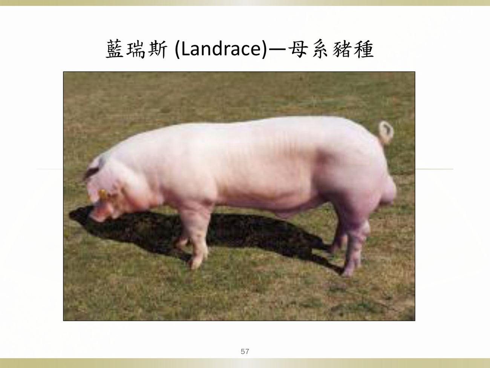
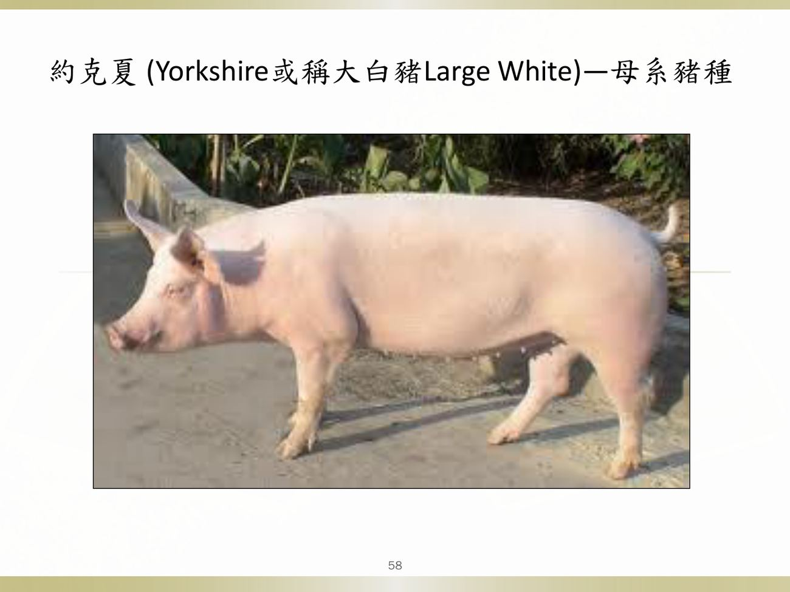
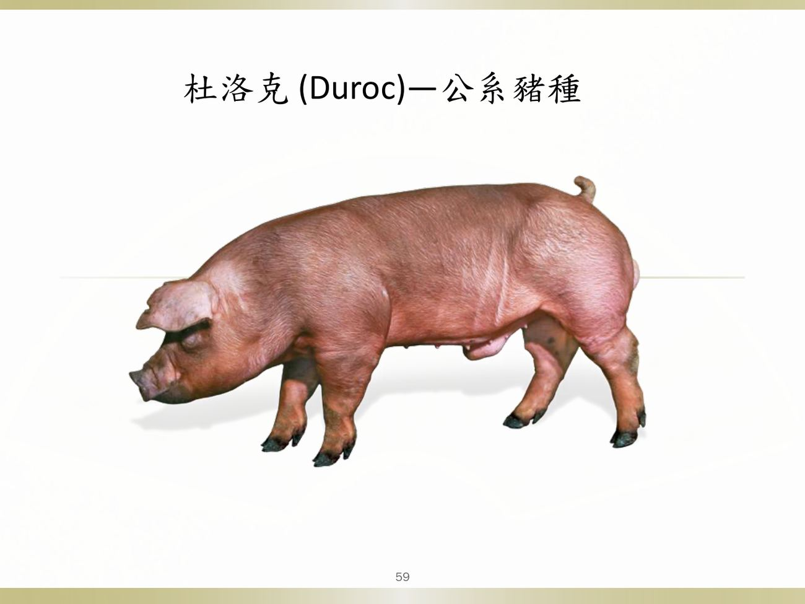
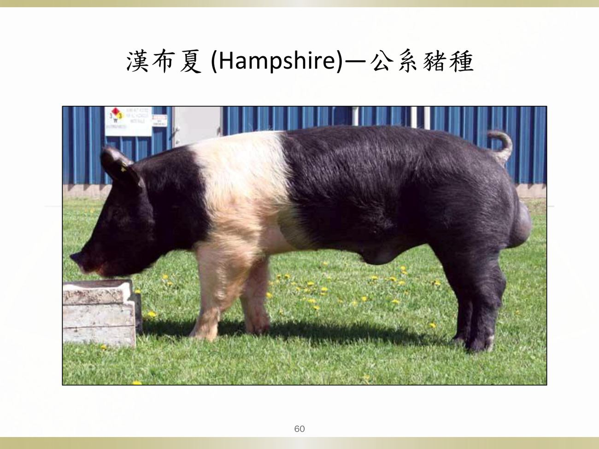
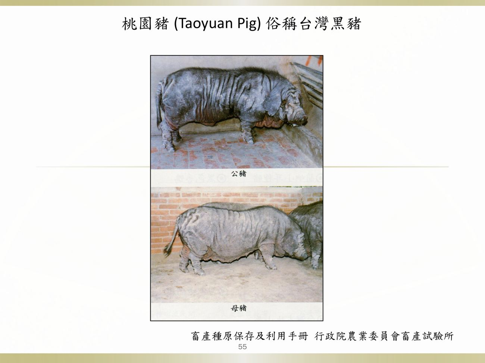
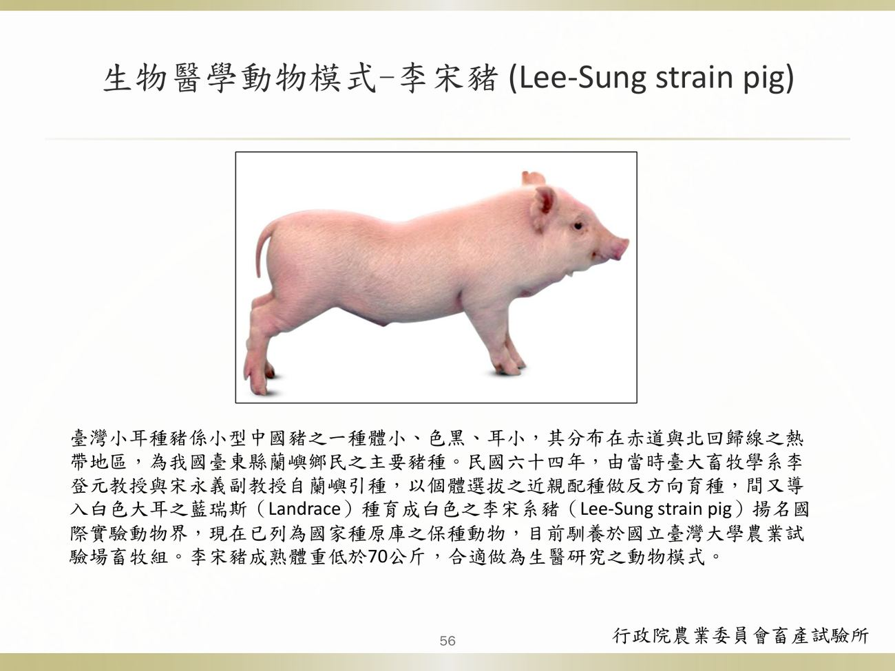

大方向與重點摘要
- 這堂課是什麼
- 課程導論：豬隻疾病由宿主、飼養環境與傳染性病原三大因素共同決定；豬病學的教學目標是讓學生從原因、臨床症狀、病理變化、致病機制、診斷、治療與防疫，對各項豬病有概括性認識。
- 為什麼重要
- 豬肉消費量佔台灣肉類消費約 50%、每人每年約 40 公斤；養豬相關產業年產值超過 1,000 億元。老師說上課內容會適時導入國考題（課程介紹就舉了 6 題 110–115 年的題目）。
- 這章要抓的重點
-
- 課程與評量：期中考第 8 週（10/29）；出席 10%、期中 40%、豬病學動動腦 10%、期末 40%；會點名。期中範圍＝第 1–7 週。
- 養豬產業：台灣 115 年 5 月 5,416 場、507.1 萬頭；1,000 頭以上大規模場佔 28.2% 的場數、71.7% 的頭數。
- 豬的一生：妊娠 114–115 天（3 個月 3 週 3 天）、哺乳 0–3–4 週、保育 4–12 週、肥育 12–24 週、上市 100 kg。
- 品種：藍瑞斯、約克夏＝母系；杜洛克、漢布夏＝公系；李宋豬＝實驗動物模式。
- 豬病防治史：LPC 兔化豬瘟弱毒株（李崇道）；1997 年口蹄疫撲殺近 400 萬頭、防疫費用 133 億元；1990 PRRS、1996 PCV2、2014 PED。
- 容易混淆
-
- 母系品種（藍瑞斯、約克夏）vs 公系品種（杜洛克、漢布夏）。
- 肥育前期 12–20 週、肥育後期 20–24 週；保育是 4–12 週。
- 三位老師分工：葉光勝（細菌與其他）、高啓霏與張家宜（病毒）。
內容以老師講義為主，章節順序跟講義一致。課程介紹附的國考題有老師用紅框標出的答案。標「補充」的是講義以外的延伸。點任何「p.N」可在右側開啟講義對照。
課程大綱、評量與期中考範圍 Course Schedule & Grading
豬隻疾病的產生牽涉到宿主、飼養的環境與傳染性病原感染三大因素。
授課教師必考
- 葉光勝（主授老師；細菌性疾病與其他）。
- 高啓霏（病毒性疾病）；張家宜（病毒性疾病）。
課程大綱（16 週）理解
| 週次 | 日期 | 課程內容 | 本站筆記 |
|---|---|---|---|
| 1 | 115-09-10 | 課程介紹與細菌抗藥性警覺性活動演講 | 第 1 週（2 份） |
| 2 | 115-09-17 | 病毒性疾病 (I)（張家宜） | 第 2 週 |
| 3 | 115-09-24 | 病毒性疾病 (II)（張家宜） | 第 3 週 |
| 4 | 115-10-01 | 病毒性疾病 (III)（高啓霏） | 第 4 週（3 份） |
| 5 | 115-10-08 | 病毒性疾病 (IV)（高啓霏） | 第 5 週（2 份） |
| 6 | 115-10-15 | 細菌性疾病 (I) | 第 6 週 |
| 7 | 115-10-22 | 細菌性疾病 (II) | 第 7 週 |
| 8 | 115-10-29 | 豬病學期中考 | — |
| 9 | 115-11-05 | 細菌性疾病 (III) | （期中後） |
| 10 | 115-11-12 | 細菌性疾病 (IV) | （期中後） |
| 11 | 115-11-19 | 豬隻生產醫學 | （期中後） |
| 12–13 | 11-26、12-03 | 活動：豬病學動動腦時間 I、II | （期中後） |
| 14 | 115-12-10 | 營養與其他原因疾病 | （期中後） |
| 15 | 115-12-17 | 寄生蟲性疾病、黴菌性疾病與黴菌毒素中毒 | （期中後） |
| 16 | 115-12-24 | 豬病學期末考試 | — |
本學期涵蓋的疾病（講義 p.12–15）理解
| 類別 | 疾病 |
|---|---|
| 病毒性疾病 | 非洲豬瘟、古典豬瘟（Hog cholera）、假性狂犬病、PRRS、口蹄疫、豬水疱病、豬流感、日本腦炎與西尼羅病毒、豬小病毒、TGE 與 PRCV、豬流行性下痢 |
| 細菌性疾病 | Escherichia coli、Actinobacillus pleuropneumoniae、萎縮性鼻炎、Salmonella、鏈球菌、梭菌、豬丹毒、鉤端螺旋體、黴漿菌、豬赤痢、其他細菌感染 |
| 寄生蟲性疾病 | 球蟲、弓蟲、Ascaris suum、外寄生蟲 |
| 其他 | 豬隻生產醫學、營養性疾病 |
評量方式必考
| 項目 | 比例 | 說明 |
|---|---|---|
| 平時表現 | 10% | 出席（會點名） |
| 期中考試 | 40% | 筆試 |
| 豬病學動動腦討論 | 10% | 口頭及書面報告 |
| 期末考試 | 40% | 筆試 |
- 動動腦活動（第 12、13 週）：效法問題導向學習（PBL）提出教案；分組，約 10 人一組；當日參與討論與口頭報告；學期結束前交一份書面報告。
- 第 1 週活動：9 月 10 日 10:20，葉光勝老師專題演講「細菌抗藥性警覺性活動」，呼應國家因應細菌抗藥性行動方案（見另一份筆記）。
- 重要參考書：Diseases of Swine, 12th edition, 2026（Zimmerman、Karriker、Schwartz、Zhang 編，Wiley-Blackwell；本校圖書館有線上版）。
- 老師聯絡：獸醫三館 511 室、Tel 33661289、ksyeh@ntu.edu.tw；Office hour 可用聯絡方式或直接敲門。
跨科關聯與獸醫師考試理解
- 相關科目：獸醫病理學、藥理學、實驗診斷學、普通疾病、傳染病學（紅框標示）、公共衛生學。
- 上課內容會適時導入國考相關考題，加深印象並做複習。
養豬產業現況 Swine Industry
這一節是產業背景，數字題少、但要知道大趨勢：場數減少、規模變大、轉為內需型。
全球與台灣理解
- 台灣每年每人豬肉攝取量約接近 40 公斤。
- 過去：毛豬（活豬）生產曾帶來大量外匯；豬肉出口每年賺外匯 16 億美元以上，進口玉米大豆約 12.3 億美元；豬肉消費量佔國內肉類總消費量約 50%。
- 與養豬有關的從業人口（養豬、飼料、動物用藥品、獸醫、屠宰、肉品加工及化製等）約 60 萬人，相關產業年產值超過 1,000 億元。
- 1997 年口蹄疫後豬肉出口量大減，養豬產業轉為內需型；平均產值仍達 570 億元，約佔農業總產值 16%。
台灣養豬頭數調查必考
| 年度 | 場數 | 在養頭數（萬） |
|---|---|---|
| 111 | 6,133 | 537.5 |
| 112 | 5,804 | 531.9 |
| 113 | 5,664 | 520.7 |
| 114 | 5,552 | 505.8 |
| 115 | 5,416 | 507.1 |
趨勢：場數逐年減少，頭數大致持平，代表場均規模變大。
| 飼養規模（115 年 5 月） | 場數 | 佔總場數 | 飼養頭數佔總頭數 |
|---|---|---|---|
| 199 頭以下 | 1,547 | 29.4% | 2.0% |
| 200–999 頭 | 2,235 | 42.4% | 26.2% |
| 1,000 頭以上大規模場 | 1,485 | 28.2% | 71.7%（掌握 7 成豬源） |
全球趨勢（p.42）：養豬越來越商業化，養豬戶減少，每場豬隻數與屠體重增加。
豬場的型別與生產系統必考
- 型別：種豬場（Breeding Farm）、肉豬場（Fattening Farm）、一貫場（Farrow to finishing farm）。
- 生產系統（Dr. John Carr）：
- 一點式（One-site）：配種分娩、保育、生長、肥育都在同一場。
- 兩點式（Two-site）：配種分娩場＋（保育、生長、肥育）。
- 三點式（Three-site）：配種分娩場、保育場、（生長、肥育）場；豬在 20–30 kg 轉場。
- 多點式（Multi-site）：多個配種分娩場與保育場，供應多個生長肥育場。
補充：把不同生長階段放在不同地點，是為了讓各階段的病原不互相傳染（例如把保育豬與母豬隔開）。
養豬產業面臨的問題理解
- 國際豬肉進口競爭壓力；產業效率有待提升。
- 密集飼養造成疫病防治困難；食用安全。
- 口蹄疫、豬瘟拔針、海外惡性傳染病如 African swine fever。
- 環保議題。
老師用「出得去、進得來」概括：豬肉出口要靠防疫，海外疫病也可能進來（p.68）。
豬的一生與生產階段 Reproductive Cycle of Swine
這張表很短但考古題出過（2019 年期中考 Q20：母豬懷孕期約 114–115 天）。
豬的一生必考
| 階段 | 時間／數字 |
|---|---|
| 性成熟（puberty, gilt） | 7–8 個月 |
| 妊娠期 | 114–115 天（3 個月、3 週、3 天） |
| 繁殖效率 | 每頭母豬每年 2.2 窩，平均每窩 10 頭 |
| 哺乳期（suckling） | 出生至 3–4 週 |
| 保育期（nursery） | 4–12 週（1–3 個月） |
| 肥育前期（fattening） | 12–20 週（3–5 個月） |
| 肥育後期（finishing） | 20–24 週（5–6 個月） |
| 上市體重 | 100 公斤 |
讀書補充Note - 妊娠期「114–115 天（3 個月、3 週、3 天）」是什麼意思？
先講結論
這是豬懷孕期的記憶口訣「3-3-3」：3 個月＋3 週＋3 天，合起來約 114 天。「114–115 天」是這個加總的結果；講義把口訣和天數一起寫在表上，換算細節是補充。
1. 怎麼換算
- 3 個月 ≈ 90 天（一個月以 30 天算）
- 3 週 ＝ 21 天
- 3 天 ＝ 3 天
- 90 ＋ 21 ＋ 3 ＝ 114 天；實際上多數母豬在 114–115 天分娩，所以講義寫 114–115。
2. 為什麼要記這個
- 一定要會（考古題出過）
- 妊娠期約 114–115 天。2019 年期中考 Q15 有選項「母豬懷孕期約為 114 天」，是正確敘述。
- 懂就好：用來換算其他疾病的感染時機
- 豬小病毒（PPV）：35 天前胚胎死亡吸收；35–70 天胎兒死亡木乃伊化；約 70 天後胎兒有免疫能力。
- 日本腦炎：妊娠 60–70 天前感染才會造成生殖障礙。
- 用 114 天當分母，大概知道這些時間點落在懷孕的哪一段（35 天約三分之一、70 天約三分之二）。（補充）
- 不用背
- 「3 個月」「3 週」各自精確是幾天，只要會 3-3-3 口訣和 114 天這個結果就夠。
3. 一句話記法
「3-3-3，114」：3 個月、3 週、3 天，約 114 天。
各疾病的好發年齡就是對照這張表：哺乳期＝E. coli 新生仔豬下痢、TGE/PED；保育期（4–12 週）＝Glässer 病、水腫病、萎縮性鼻炎；肥育期＝APP、豬丹毒。妊娠 114–115 天用來推算 PPV（35、70 天）與 JEV（60–70 天）的感染階段（補充）。
台灣養豬產業發展與飼料看過
- 1947 年 100 萬頭；1951 年 226 萬頭；1953 年台糖公司開始大規模養豬，奠定今日台灣養豬事業基礎。
- 飼料：甘藷藤煮後餵豬（纖維多、營養不均衡）→ 甘藷－大豆餅→ 玉米－豆粉（大豆粕）。
- 黃豆含豐富的離胺酸（lysine），對豬的營養很重要；進口黃豆原為製造白絞油（大豆油），豆餅為副產物，但豆餅餵豬長得很快；後來進口黃豆是為了更多豆餅或豆粉。
- 台灣自己能生產的養豬原料有限，玉米（碳水化合物）、黃豆（蛋白質）、麩皮（小麥製粉後剩下）都需進口。
台灣的豬種 Pig Breeds in Taiwan
品種題在 111 學年期中考出過（附照片認品種、母系 vs 公系）。
台灣的豬種必考
- 台灣從 200 年前就有養豬紀錄。
- 客家人從中國廣東帶來三個中國土種豬：在台灣桃園育成桃園種、在宜蘭雙溪地區育成頂雙溪種、在高雄美濃地區育成美濃種。
- 後來逐漸從國外進口藍瑞斯、約克夏等母系豬，以及杜洛克、漢布夏等公系豬種。
| 品種 | 系別 | 外觀／備註 | 代表圖 |
|---|---|---|---|
| 藍瑞斯（Landrace） | 母系 | 白色、大耳下垂（drooping ears） |  |
| 約克夏（Yorkshire，大白豬 Large White） | 母系 | 白色 |  |
| 杜洛克（Duroc） | 公系 | 紅棕色 |  |
| 漢布夏（Hampshire） | 公系 | 黑色、肩部白帶 |  |
| 桃園豬（Taoyuan pig；俗稱台灣黑豬） | 本地土種 | 黑色 |  |
| 李宋豬（Lee-Sung strain pig） | 實驗動物 | 成熟體重 <70 公斤，適合生醫研究動物模式 |  |
台灣小耳種豬是小型中國豬，體小、色黑、耳小，分布在赤道與北回歸線的熱帶地區，為蘭嶼鄉民主要豬種。民國 64 年由臺大畜牧學系李登元教授與宋永義副教授自蘭嶼引種，以近親配種反方向育種，並導入白色大耳的藍瑞斯血統育成白色的李宋系豬，揚名國際實驗動物界，已列為國家種原庫保種動物，目前馴養於臺大農業試驗場。
讀書補充Note - 「母系」和「公系」是什麼意思？
先講結論
「母系」和「公系」是養豬業依用途替豬種分的兩類：母系品種用來生出好的母豬，公系品種用來當公豬，生出長得快、肉質好的肉豬。講義只寫哪些品種屬於哪一系；兩個系各自看重什麼、怎麼雜交，是教科書補充。
1. 兩個系是什麼意思
- 母系（maternal line）：藍瑞斯、約克夏（大白豬）（講義）。目的是當母豬，看重生得多、奶水足、會帶仔（窩仔數、母性、泌乳）（補充）。
- 公系（sire line）：杜洛克、漢布夏（講義）。目的是當公豬，看重長得快、飼料利用率好、瘦肉多（生長速度、肉質、胴體）（補充）。
2. 它們在豬場裡怎麼合作（補充）
- 用兩個母系品種（藍瑞斯 × 約克夏）雜交，生出「雜交母豬」，繁殖力強。
- 這頭雜交母豬再用公系品種（杜洛克或漢布夏）配種。
- 生出來的小豬就是養到上市的肉豬：繼承母系的好存活率，以及公系的好生長和肉質。
- 所以母系品種一代代留種做母豬；公系品種拿來當父親。
3. 例題怎麼解
- 題目問「公系」，選項裡只有杜洛克是公系。
- 藍瑞斯、約克夏是母系；李宋豬是實驗動物，用於生醫研究，不是肉豬育種的一系。
4. 要背到什麼程度
- 一定要會（考古題出過）
- 藍瑞斯、約克夏＝母系；杜洛克、漢布夏＝公系。
- 藍瑞斯的外觀：白色、大耳下垂（111 學年期中考附照片認品種）。
- 懂就好
- 母系看繁殖力，公系看生長與肉質；肉豬是母系母豬配公系公豬的後代。（補充）
- 不用背
- 各品種的來源國與育成歷史。
5. 記憶小技巧（補充）
- 母系＝「藍」「約」：兩個白色的母系品種，常用來做母豬。
- 公系＝「杜」「漢」：杜洛克（紅棕）、漢布夏（黑色、肩部白帶），顏色鮮明，不是白色。
- 看到白色大耳下垂的豬，先想藍瑞斯＝母系。
台灣豬病防治工作演進 History of Swine Disease Control in Taiwan
防疫工作是養豬產業維持國際競爭力的重要後盾。
豬瘟疫苗的發展必考
- 日治時期與光復初期使用寺門市福馬林臟器疫苗防治豬瘟。
- 民國 41 年李崇道博士由菲律賓引進兔化豬瘟弱毒株，加以研究改良。
- 經過 9 年研發出對豬病原性已消失、安全且免疫效果強的疫苗株，由李崇道博士命名為 LPC-China strain：L＝lapinized（兔化弱毒株）；P＝Philippines；C＝Coronel 博士贈送。
- 民國 46–47 年間興建台灣第一棟冷凍乾燥實驗室；相關人物：李崇道博士、林再春博士。
其他重要豬病必考
| 時間 | 事件 |
|---|---|
| 較早期 | 日本腦炎病毒、豬丹毒、豬隻傳染性肺炎、豬隻假性狂犬病 |
| 民國 86 年 3 月 | 新竹縣竹北爆發口蹄疫：撲殺 385 萬頭（含斃死豬合計 400 萬頭），防疫費用 133 億元 |
| 1990 年 | 豬生殖和呼吸綜合症（PRRS） |
| 1996 年 | 第二型豬環狀病毒（PCV2） |
| 2014 年 | 豬流行性下痢（PED） |
未來展望（p.66）：改以業者為主、政府為輔為共識，養豬場發揮主動改善與提升精神；疫情報告必須迅速確實，切勿隱瞞不報。
讀書補充Note - 豬病防治史：LPC、1997 口蹄疫、PRRS／PCV2／PED 年份是什麼？
先講結論
這是「台灣豬病防治史」裡最值得記的三件事：一支疫苗的名字、一場大疫情的規模、三個新豬病出現的年份。「考試方向（推測）」表裡的這一列是依講義強調的內容整理的，不是考古題；實際考不考以老師為準。
1. 這一列在講哪三件事
- LPC ＝ Lapinized、Philippines、Coronel
- LPC 是台灣用的豬瘟疫苗株，全名 LPC-China strain（講義）。
- L ＝ Lapinized：兔化弱毒株。意思是把豬瘟病毒拿到兔子身上一代代傳，讓它對豬的致病力消失，變成安全的疫苗株（補充）。
- P ＝ Philippines：病毒株從菲律賓引進。
- C ＝ Coronel：Coronel 博士贈送的。
- 背景：民國 41 年李崇道博士從菲律賓引進兔化豬瘟弱毒株，研究改良 9 年，得到安全又免疫效果強的疫苗株（講義）。
- 1997 口蹄疫 385 萬頭
- 民國 86 年 3 月新竹縣竹北爆發口蹄疫，撲殺 385 萬頭（含斃死豬合計約 400 萬頭），防疫費用 133 億元（講義）。
- 豬肉出口大減，養豬產業之後轉為內需型。
- 1990 PRRS、1996 PCV2、2014 PED
- 三個後來才成為問題的重要豬病（講義）：1990 年豬生殖與呼吸綜合症（PRRS）；1996 年第二型豬環狀病毒（PCV2）；2014 年豬流行性下痢（PED）。
2. 要背到什麼程度
- 一定要會
- LPC 三個字母各代表什麼（好考、答案固定）。
- 懂就好
- 1997 口蹄疫的規模（385 萬頭、133 億），是了解豬病防疫為什麼重要的背景。
- 不用背
- 1990、1996、2014 的精確年份；只要知道這三個病都是近幾十年才出現的新病。（這是我的判斷，沒有考古題證據。）
3. 一句話記法（補充）
「LPC＝兔、菲、柯」：Lapinized 兔化、Philippines 菲律賓、Coronel 柯羅內爾博士。
講義所附國考題 National Exam Examples
老師舉這 6 題是要讓大家「感受」國考出題方式，答案用紅框標出。這些題目的內容會在第 6、7 週細菌性疾病講到，詳解中附上對應頁面。先自己作答，再點「顯示答案」。
(C) 對（老師紅框）：保育豬、盲腸與結腸鈕扣狀潰瘍 → 沙門氏菌症（細菌性疾病 (II)）。
(A) 錯：仔豬球蟲在小腸，多在哺乳期。
(B) 錯：PED 是小腸絨毛萎縮（第 5 週）。
(D) 錯：豬赤痢是大腸黏膜壞死的黏液血便。
(B) 對（老師紅框）：EPEC（豬的 AEEC）緊密附著並抹除微絨毛（細菌性疾病 (I)）。
(A) 錯：ETEC 靠毒素。
(C)(D) 錯。

(C) 對（老師紅框）：萎縮性鼻炎中，B. bronchiseptica 幫助產毒型 P. multocida 定殖（細菌性疾病 (I)）。
(D) 對（老師紅框）：豬丹毒菌（細菌性疾病 (II)）。
(A) 錯（老師紅框）：（補充）最常感染人類的是血清型 2，不是第 3 型。
(B)(C)(D) 對（豬鏈球菌屬期中後的細菌性疾病講義）。
(B) 對（老師紅框）：敗血型沙門氏菌症，肝壞死點即副傷寒小節；不發酵乳糖 → MacConkey 無色（細菌性疾病 (II)）。
期中考古：品種題必考
考試方向（推測）
課程介紹偏導論，是否出題由老師決定；以下依講義與考古題推測。
| 可能考法 | 答題重點 |
|---|---|
| 豬的一生 | 妊娠 114–115 天；哺乳 3–4 週、保育 4–12 週、肥育前期 12–20 週、後期 20–24 週；上市 100 kg |
| 品種 | 藍瑞斯與約克夏＝母系；杜洛克與漢布夏＝公系；藍瑞斯大耳下垂；桃園豬黑色；李宋豬 <70 kg 實驗動物 |
| 豬場型別與生產系統 | 種豬場／肉豬場／一貫場；一點式、兩點式、三點式（20–30 kg 轉場）、多點式 |
| 台灣養豬統計 | 場數減少、規模變大；千頭以上場佔 71.7% 頭數 |
| 豬病防治史 | LPC＝Lapinized、Philippines、Coronel；1997 口蹄疫 385 萬頭；1990 PRRS、1996 PCV2、2014 PED |
| 評量與考試時間 | 期中 40%、期末 40%；期中 10/29 |
練習題 Practice Quiz
先自己作答再點開答案。
宿主：年齡與免疫狀態（例如新生仔豬缺乏母源抗體才發病的 pHEV）。環境：飼養環境與管理（例如通風差、擁擠、溫差大會加重 APP 與豬流感；皮膚外傷與粗糙地面是滲出性表皮炎的前置因子）。病原：傳染性病原的感染（例如 PRRSV、E. coli）。三者交互作用，這也是為什麼混合感染與壓力常讓亞臨床感染變成臨床病。（本題為依課程介紹開宗明義的觀念延伸。）